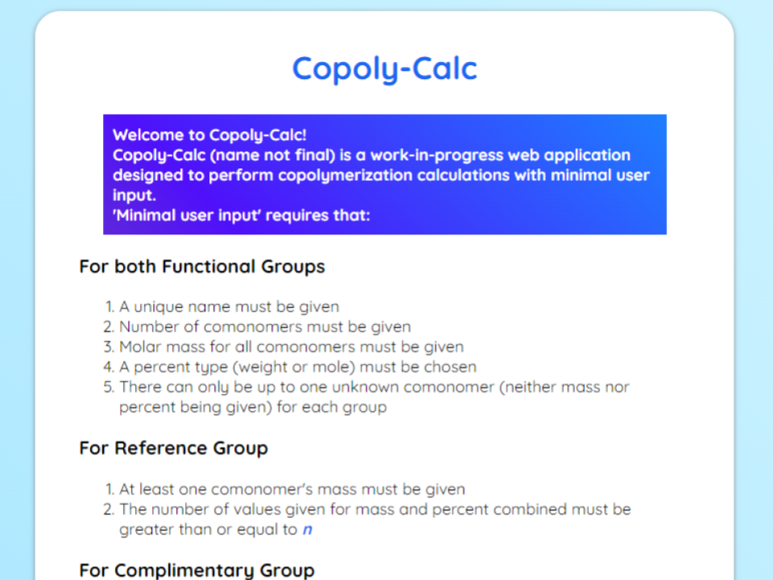

About Me
I currently live in Phoenix, Arizona, where I was born and raised. I studied chemistry at
Arizona State University and received my BA for General Chemistry there.
My interests include: graphic design (typography, illustration), technology, videogames, and
cooking.
I began programming in the summer of 2021, when I started the development of a chemistry
calculator to aid in copolymer synthesis for my research mentor, written in C++. Later, I
transitioned the C++ program to a web application written in JavaScript, which is still a
work-in-progress project.
Since then, I helped design the company website for Advocate Hospice and Palliative Care, in
addition to developing [Imaginary Portfolio Filler] and [Hypothetical Website].
I was also a key member for the development of [Fictional Database Project], where I
implemented a bespoke query selection tool using Minecraft redstone.
Previous Work
Copoly-Calc
Advocate Hospice Website

Imaginary Portfolio Filler

Hypothetical Website